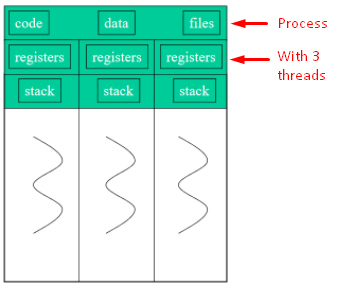

Threads v Processes
There is a lot of overhead in creating a new process. Rather than creating a process, which inherit similar features to its parent process, a thread is more efficient. Processes are ideal when they perform a lot differently from their parent process.
A process contains a set of threads, or just a single thread. Threads run in parallel when there is more than one core. This is called multiprocessor architecture. Each core is considered a separate processor.

Each process is represented by a Process Control Block, by the OS. It contains,
- The state of the process
- Current situation (running, waiting...)
- Pointer to its memory location.
- Links to other PCBs to form a queue.
Spawning processes
Nested process: has a parent.
Flat: at the same level as the spawnee.
When creating a thread,
It allocates memory, initializes a new thread in JVM and invokes the run() method.
Concurrency
Two types of concurrency:
- Inherently: real time, activities that can happen simultaneously.
- Potentially: possible to parallelise, massive computations.
Flynn's types of concurrency
Single Instruction, Single Data Stream (SISD)
Single Instruction, Multiple Data Streams (SIMD, ideally GPUs)
Multiple Instructions, Single Data Streams (MISD, rarely used)
Multiple Instructions, Multiple Data Streams (MIMD, most flexible)
Embedded Systems: small dedicated processors, all communicate with main controller, work in real time.
Context-switch: switching between processes, saving states between them and then going back to the waiting process.
An atomic action is a single instruction that cannot be interrupted.
A program is deterministic if there is only one path, that is the same output at all times. For concurrent systems, threads can execute at different times thus changing the output.
Concurrency is different from parallelism.
Concurrency refers to performing two tasks at the same time. But, one can be paused while another one is being worked on. Parallelism refers to performing tasks in simultaneously.
The Life-cycle

New: initializes a new object, for a thread, but does not start. It then becomes, runnable.
The thread is not started until start() is invoked.
The thread dies, when it is interrupted or the run method terminates.
Process Scheduling
Refers to the operating system, or JVM deciding what process (thread) to run next. Goal is to give every thread a fair share, minimize the time of running each process, use the processor as efficiently as possible. The run-time support system takes this job. JVM doesn't have this, OS manages it. Default = unfair.
- Giving every process an equal time slice, but increasing context switches (fair).
- Or, in sequence (unfair).
Timing
sleep(milli), a thread is then runnable again but doesn't start running immediately. yield() puts the running process back into ready queue.


 (2 v 1).
(2 v 1).